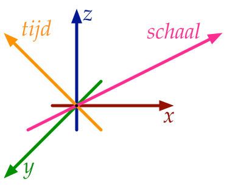

Onze wereld is driedimensionaal en complex, is continue in verandering en heeft verschillende verschijningsvormen op verschillende detailniveaus. Toch modelleren we de werkelijkheid in Geografische Informatie Systemen (GIS) meestal middels 2D representaties. Deze modellen bestaan uit punten, lijnen en polygonen die met elkaar zijn verbonden (Figuur 1). De resulterende representaties zijn efficiënt en relatief eenvoudig te gebruiken en veel methodes en applicaties zijn hierop gebaseerd. Maar 2D representaties kennen hun beperkingen. Problemen moeten worden versimpeld tot 2D; en het beheren van relaties tussen verschillende objecten is complex, vooral als deze relaties een tijdscomponent hebben of over verschillende detail-niveaus gaan. Desalniettemin gaat veel GIS onderzoek over het verbeteren van de 2D representaties alsook het ontwikkelen van nieuwe methoden die op 2D representaties zijn gebaseerd.
Deze dissertatie bestudeerd een fundamenteel andere modelleer-benadering waarbij zowel ruimtelijke als niet-ruimtelijke kenmerken worden gemodelleerd als extra geometrische dimensies. De kenmerken “tijd” en “schaal” worden daarbij specifiek bekeken (Figuur 2). Eerdere onderzoeken naar het modelleren van tijd en schaal als extra dimensie zijn nooit verder gekomen dan een conceptuele beschrijving. Dit onderzoek daarentegen beoogt de fundamentele aspecten van een multidimensionaal GIS te realiseren door hoger dimensionale (\(n\)D) representaties te ontwikkelen inclusief bewerkingsmethodes om deze \(n\)D geografische informatie te creëren, manipuleren en visualiseren. In deze thesis wordt aangetoond dat een \(n\)D benadering aan de ene kant veel computergeheugen vraagt om alle relaties over dimensies heen op te slaan. Aan de andere kant is de aanpak zeer krachtig gebleken omdat een \(n\)D benadering op een doeltreffende en consistente manier geometrie met haar attributen opslaat. Naast de objecten, kunnen ook alle topologische relaties tussen de objecten worden opgeslagen welke zich kunnen voordoen binnen en tussen iedere dimensie. De in dit onderzoek voorgestelde aanpak is generiek en kan eenvoudig worden uitgebreid om andere niet-ruimtelijke aspecten te modelleren. Hierdoor is data management waarbij de consistentie van geografische informatie wordt gegarandeerd over dimensies heen. Bovendien kunnen hiermee krachtigere bewerkingen worden uitgevoerd zoals controleren of twee objecten op enig moment in de tijd aangrenzend zijn.
Om een \(n\)D ruimte te modelleren kan het best gestart worden met een \(n\)D ruimtelijke partitie (zonder gaten en overlap) (Figuur 3), Conceptueel kan dit worden weergegeven als een \(n\)D simplicial complex of een cell complex. Vervolgens kan dit worden geïmplementeerd via een simplex-based datastructuur met een incidence graph, bijvoorbeeld als een set van Nef polyhedra of, zoals dat in dit onderzoek is gedaan, via geordende topologische modellen (cell-tuple en generalised/combinatorial maps).
Het construeren van computer representaties van \(n\)D objecten kan erg complex zijn. Bestaande 2D/3D constructie methodes manipuleren combinatorial primitives of maken gebruik van bewerkingen op primitieve-niveau (zoals Euler operatoren). Deze gaan uit van onze intuïtie over 2D en 3D geometrieën en werken daarmee niet goed in hogere dimensies. Hierdoor is het helaas heel makkelijk om invalide \(n\)D objecten te creëren die vervolgens moeilijk te bewerken zijn. Dit probleem doet zich ook al voor in drie dimensies.
In deze dissertatie is een manier onderzocht en ontwikkeld om eenvoudig valide representaties van \(n\)D objecten te construeren. Daartoe zijn er drie methodes voorgesteld: Extrusion neemt een \((n-1)\)D cell complex en een set van intervallen per cell en projecteert deze parallel aan een nieuwe as ten einde een \(n\)D cell complex te construeren (Figuur 4). Incremental construction construeert een \(n\)D object op basis van zijn \((n-1)\)-grens. Via het linken van verschillende representaties van hetzelfde 3D object op verschillende detailniveaus (LODs) met als resultaat een 4D model (Figuur 5).
Om \(n\)D modellen te kunnen visualiseren en te kunnen bewerken in huidige software, is er een methode nodig om valide 2D/3D subsets af te leiden uit de \(n\)D data. Zo’n methode kent twee stappen: 1) het selecteren van een subset van de \(n\)D objecten uit het model en 2) de subset projecteren naar een lagere dimensie (2D of 3D). Als opstap heeft dit onderzoek laten zien hoe een zowel orthografische als een perspectieve projectie van \(n\)D naar \((n-1)\)D kan worden gedefinieerd.
Tenslotte heeft deze thesis alle hierboven genoemde concepten gevalideerd op \(n\)D data over de “echte” wereld. Omdat er veel fouten voorkomen in deze data, zijn er in dit onderzoek ook methodes ontwikkeld om valide polygonen en een plenaire partitie te creëren op basis van constrained triangulatie. Daarnaast is er een methode ontwikkeld om polyhedra en ruimtelijke opdelingen te corrigeren door het “snappen” van primitieven op lagere dimensies en het verwijderen van overlap door middel van Boolean set bewerkingen op Nef polyhedra. Hierdoor zijn er testen gedaan met data tot 6D gebaseerd op “echte” GIS data, wat een goede basis is voor \(n\)D GIS.
In de toekomst kan dit onderzoek worden uitgebreid met wijzigingsbewerkingen voor \(n\)D objecten, “echte” 4D ruimtelijk-temporele datasets en correctie methodes die de kwaliteit van de \(n\)D data garanderen. Alle implementaties van deze dissertatie zijn publiekelijk beschikbaar via open source licenties.

Figuur 1: In GIS wordt een kubus niet gerepresenteerd als een 3D volume maar als 6 vierkante 2D vlakken die tesamen de ruimte van de kubus omvatten.↩

Figuur 2: 3D ruimte, tijd en schaal kunnen worden gemodelleerd als 5D ruimte.↩

Figuur 3: Een 3D ruimtelijke opdeling bestaat uit een set ruimte-vullende volumes zonder gaten en overlap.↩

(a)

(b)
Figuur 4: (a) een set polygonen wordt geconverteerd naar (b) een set blokken door de polygonen van 2D naar 3D op te trekken.↩

Figuur 5: Twee detailniveaus van een 3D model van een huis (links en rechts) worden gelinkt tot een 4D model.↩